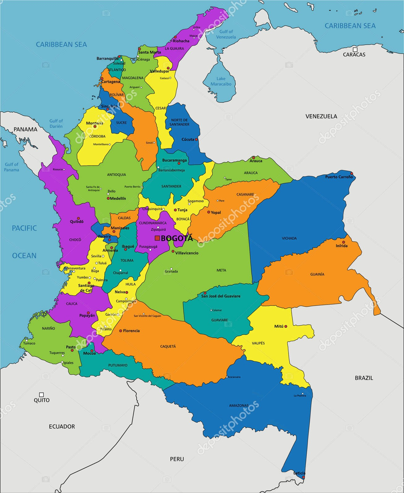

Una herramienta educativa para estudiantes de 5° primaria
📍 Ubicación Geográfica
Colombia está ubicada en la esquina noroccidental de América del Sur. Se
encuentra entre los 12°N y 4°S de latitud, y entre los 67°W y 79°W de
longitud. Es el único país sudamericano con costas en el océano Pacífico
y el mar Caribe.
Limita al norte con el mar Caribe.
Al este con Venezuela y Brasil.
Al sur con Perú y Ecuador.
Al oeste con Panamá y el océano Pacífico.
Su ubicación estratégica le permite ser un puente comercial, cultural y
ecológico entre América Central y América del Sur.

⛰️ Relieve y Clima
El relieve colombiano es variado. Se destacan las tres cordilleras de
los Andes (Occidental, Central y Oriental), que atraviesan el país de
sur a norte. También hay planicies extensas como los Llanos Orientales,
la Amazonía y las costas del Caribe y el Pacífico.
La altitud influye directamente en el clima. Los climas se agrupan por
pisos térmicos:
Cálido: hasta 24°C – Costa Caribe, Amazonas.
Templado: 17–24°C – Medellín, Armenia.
Frío: 12–17°C – Bogotá, Tunja.
Páramo: menos de 12°C – Sumapaz, Cocuy.
La variedad de climas favorece la agricultura, biodiversidad y el
turismo.